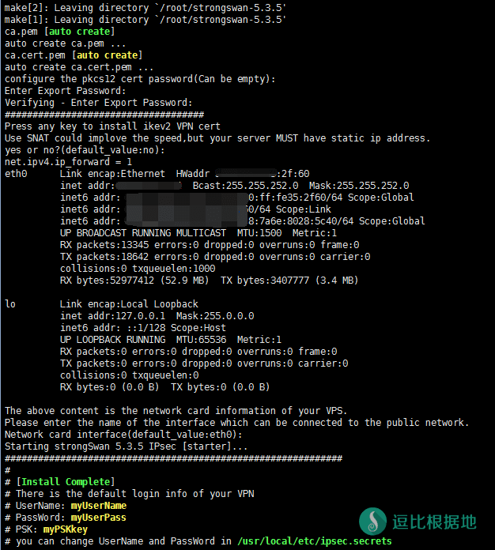
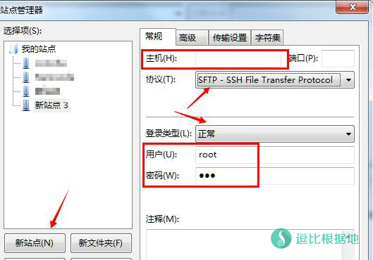
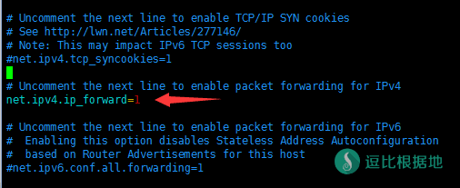

Ubuntu/CentOS搭建IPSec/IKEv2 VPN一键安装脚本。适用于WindowsPhone,iOS,Android和PC设备。
最新更新内容请看Github项目说明：https://github.com/quericy/one-key-ikev2-vpn
其他VPN教程：
安装说明
检查PPP/TUN环境
首先要检查VPS的TUN和PPP是否开启。
cat /dev/net/tun
返回的必须是:
cat: /dev/net/tun: File descriptor in bad state
运行:
cat /dev/ppp
返回的必须是:
cat: /dev/ppp: No such device or address
如果返回内容不是下图的结果的话，请与VPS提供商联系开启PPP和TUN权限。
当然，脚本在安装时也会执行检查，如果不适用于安装，脚本会予以提示。

用法很简单
总结成一句话就是：除了VPS类型要选对以外，其他的一路回车就好了。
特性
服务端要求：Ubuntu 14.04+ / Debian 7(本教程仅在此系统下测试，其他系统不保证) / CentOS 6
客户端：
iOS/OSX=>ikev1,ikev2
Andriod=>ikev1
WindowsPhone=>ikev2
其他Windows平台=>ikev2
可使用自己的私钥和根证书，也可自动生成
证书可绑定域名或ip
要是图方便可一路回车
最近更新
- 使用新版strongswan(5.3.5),编译参数修改;
- 优化iptables包处理;
- 添加接口判断选择;
- 加入对iOS9的ikev2支持;
- DH组修改为2048,解决iOS9设备8分钟断开的问题;
服务端安装说明
下载脚本
wget --no-check-certificate https://raw.githubusercontent.com/quericy/one-key-ikev2-vpn/master/one-key-ikev2.sh
注:如需使用其他分支的脚本,请将上述url中的master修改为分支名称，各分支区别详见本页的分支说明。
运行脚本
如果有需要使用自己的根证书请将私钥命名为ca.pem，将根证书命名为ca.cert.pem，放到脚本的相同目录下再运行该脚本
chmod +x one-key-ikev2.sh bash one-key-ikev2.sh

除了第一个选择VPS类型，其他的不懂都可以 直接回车！
等待自动配置部分内容后，选择vps类型（OpenVZ还是Xen、KVM），选错将无法成功连接，请务必核实服务器的类型。
输入服务器ip或者绑定的域名(连接vpn时服务器地址将需要与此保持一致)，以及证书的相关信息(C,O,CN)，为空将使用默认值(default value)，确认无误后按任意键继续
是否使用SNAT规则(可选).使用前请确保服务器具有不变的静态公网ip,可提升防火墙对数据包的处理速度.默认为不使用.
补充网卡接口信息,为空则使用默认值(Xen、KVM默认使用eth0,OpenVZ默认使用venet0).如果服务器使用其他公网接口需要在此指定接口名称,否则连接后可能无法访问外网)
输入两次pkcs12证书的密码(可以为空)
看到install Complete字样即表示安装完成。
默认用户名密码将以黄字显示，可根据提示自行修改配置文件中的用户名密码,多用户则在配置文件中按格式一行一个具体看这个说明，保存并重启服务生效。
使用SFTP来下载VPS中的证书。（我推荐使用filezilla，挺好用的！）
将提示信息中的证书文件 /root/my_key/ca.cert.pem 下载到本地，修改后缀名为.cer后，导入本地计算机。
Android/IOS设备使用Ikev1无需导入证书，而是需要在连接时输入共享密钥，共享密钥即是提示信息中的黄字PSK.

客户端配置说明
连接的服务器地址和证书保持一致,即取决于签发证书ca.cert.pem时使用的是ip还是域名（默认为IP）;
卸载方式
进入脚本所在目录的strongswan文件夹(因为默认是安装的最新版本，所以文件夹后面的版本号可能会不同)执行:
cd /root/strongswan-5.3.5 make uninstall
自行删除脚本所在目录的相关文件(one-key-ikev2.sh,strongswan.tar.gz,strongswan文件夹,my_key文件夹).
卸载后记得检查iptables配置.
分支说明
- master分支：经过测试的相对稳定的版本;
- dev-debian分支：如需在Debian6/7 下使用,请使用该分支的脚本,该脚本由bestoa修改提供;
- dev分支：开发分支,使用最新版本的strongswan,未进过充分测试,用于尝试和添加一些新的功能,未来可能添加对L2TP的兼容支持,以及对ipv6的支持;
命令说明
# 启动VPN ipsec start # 查看VPN状态 ipsec status # 重启VPN ipsec restart # 停止VPN ipsec stop
开机启动
服务器重启后默认ipsec不会自启动，请命令手动开启,或添加/usr/local/sbin/ipsec start到自启动脚本文件中(如rc.local等)：
Centos系统：
chmod +x /etc/rc.d/rc.local && echo "/usr/local/sbin/ipsec start" >> /etc/rc.d/rc.local
Ubuntu/Debian系统：
chmod +x /etc/rc.local && sed -i '$d' /etc/rc.local && echo "/usr/local/sbin/ipsec start" >> /etc/rc.local && echo "exit 0" >> /etc/rc.local
连上服务器后无法链接外网
打开sysctl文件:
vi /etc/sysctl.conf
找到 net.ipv4.ip_forward=1，删除前面的“#”注释符（按 I键 进入编辑模式），并保存退出（按 Esc键 退出编辑模式，然后输入 :wq 保存并退出）。
使用以下指令刷新sysctl：
sysctl -p
如遇报错信息，请重新打开/etc/syctl并将报错的那些代码用#号注释，保存后再刷新sysctl直至不会报错为止。
根据留言评论里 @callmeleifeng 的提醒，Openvz因为模板问题，可能会报错：
error: “net.bridge.bridge-nf-call-ip6tables” is an unknown key error: “net.bridge.bridge-nf-call-iptables” is an unknown key error: “net.bridge.bridge-nf-call-arptables” is an unknown key
给出的解决办法：
# 修复modprobe的： rm -f /sbin/modprobe ln -s /bin/true /sbin/modprobe #修复sysctl的： rm -f /sbin/sysctl ln -s /bin/true /sbin/sysctl
大家如果出现这个问题，可以尝试一下。

添加/修改用户
打开配置文件，并按格式修改。
vi /usr/local/etc/ipsec.secrets # vi 打开配置文件后，按I键 进入编辑模式，按格式修改，修改后，按ESC键退出编辑模式，然后输入 :wq 保存并退出。
默认配置如下，当然我又添加了一个用户作为示例。
用户名 %any : EAP "用户密码"
: RSA server.pem : PSK "myPSKkey" : XAUTH "myXAUTHPass" myUserName %any : EAP "myUserPass" Toyo %any : EAP "doub.io"
其他VPN教程：
本文转载自：https://quericy.me/blog/699/
参考资料：https://github.com/quericy/one-key-ikev2-vpn/tree/master
转载请超链接注明：逗比根据地 » CentOS/Debian/Ubuntu一键安装IPSEC/IKEV2 VPN脚本
责任声明：本站一切资源仅用作交流学习，请勿用作商业或违法行为！如造成任何后果，本站概不负责！